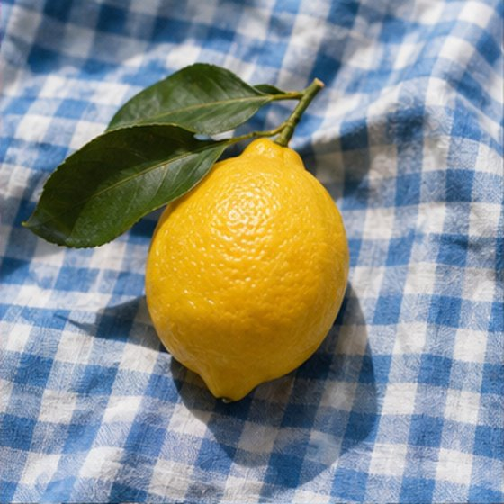
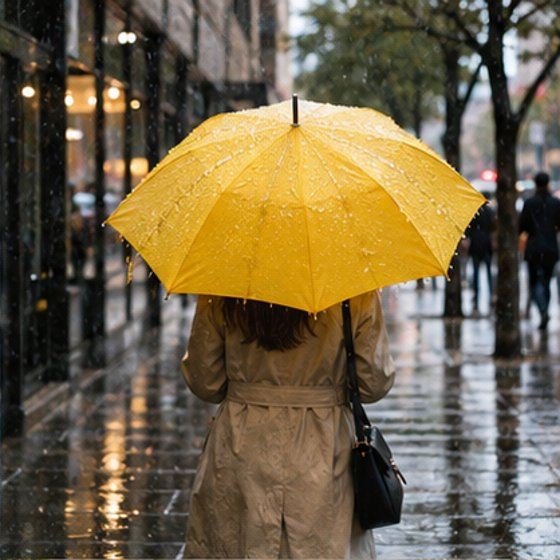
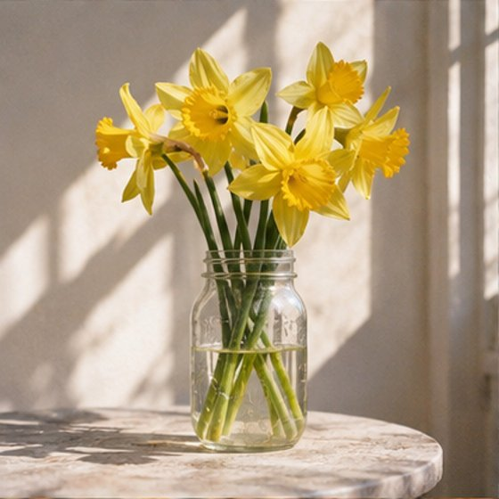
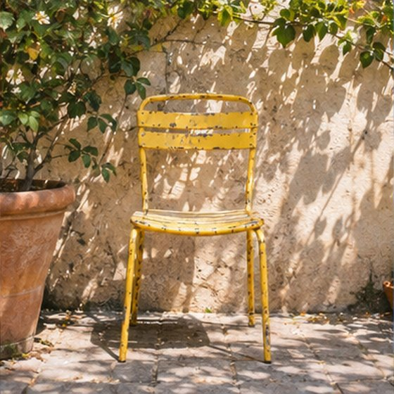
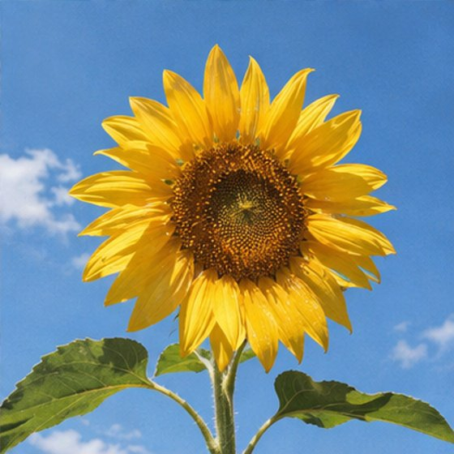

<!doctype html><html lang="en"><meta charset="utf-8"><meta name="viewport" content="width=device-width,initial-scale=1"><title>Curio · Home and Mine</title><style>*{box-sizing:border-box}body{margin:0;padding:28px 12px;display:flex;justify-content:center;align-items:flex-start;gap:26px;flex-wrap:wrap;background:#edeae4;color:#2f282a;font:15px system-ui,sans-serif}.screen{width:min(375px,100%);height:720px;background:white;overflow:hidden;border-radius:22px;display:flex;flex-direction:column;box-shadow:0 5px 25px #3222}.scroll{overflow-y:auto;flex:1;scrollbar-width:none}header{padding:12px 15px;display:flex;justify-content:space-between;align-items:center}header b{font:italic bold 28px Georgia}h1{font-size:19px;margin:0}.tabs{display:flex;justify-content:center;gap:28px;position:sticky;top:0;background:white;z-index:1;border-bottom:1px solid #eee}.tabs>*{background:none;border:0;padding:12px 4px;font:600 14px system-ui;color:#655c60}.tabs .current{border-bottom:3px solid #ae3657;color:#271d24}.cards{display:grid;grid-template-columns:repeat(2,minmax(0,1fr));gap:14px 5px;padding:6px}.cover{display:grid;grid-template-columns:repeat(var(--cols),1fr);grid-auto-rows:1fr;gap:3px;aspect-ratio:1;width:92%;margin:5px auto 9px}.cover>*{min-height:0;width:100%;height:100%;object-fit:cover}h3,small{display:block;margin:5px 5px 0}h3{font-size:15px;line-height:1.2}small{font-size:11px;color:#6c6165}footer{display:flex;border-top:1px solid #e9e4e4;justify-content:space-around;padding:14px 0;color:#82777b;font-size:13px}.selected{font-weight:700;color:#a62d4d}.profile{padding:16px 20px;background:#59434d;color:white}.person{display:flex;align-items:center;gap:12px;margin:18px 0}.avatar{border-radius:50%;background:#fae0b4;width:55px;height:55px;display:grid;place-items:center;color:#583643;font:italic 32px Georgia}.person strong{font:26px Georgia}.stats{font-size:13px;color:#ffebee}.label{margin:11px 10px 1px;font-size:15px}button{cursor:pointer}
.cover img {
  --rim: calc(6px / var(--cols));
  background: #fffdf7;
  border: solid #fffdf7;
  border-width: var(--rim) var(--rim) calc(var(--rim) * 2.8);
  outline: 1px solid #d9d5cd;
  outline-offset: -1px;
  box-shadow: 0 1px 2px #34292326;
}
</style><section class="screen"><header><b>Curio</b><h1>Home</h1></header><div class="scroll"><div class="tabs"><span class="current">Discover</span></div><div class="cards"><article data-role=""><div class="cover" style="--cols:2"><i style="background:#ca7a77"></i></div><h3>Find something yellow</h3><small>Maya · 3/9 · 7 min left</small></article><article data-role=""><div class="cover" style="--cols:1"></div><h3>A flower on your route</h3><small>Iris · 1/9 · 8 min left</small></article><article data-role=""><div class="cover" style="--cols:3"><i style="background:#7a7d7f"></i><i style="background:#b8861d"></i><i style="background:#d29020"></i><i style="background:#9e7952"></i></div><h3>Where did the light land?</h3><small>Jun · 5/9 · 6 min left</small></article><article data-role=""><div class="cover" style="--cols:2"><i style="background:#b8861d"></i><i style="background:#c2a050"></i></div><h3>A doorway near you</h3><small>Rae · 2/9 · 4 min left</small></article></div></div><footer><span class="selected">Home</span><span class="">Inbox</span><span class="">Mine</span></footer></section><section class="screen"><div class="scroll"><div class="profile"><h1>Mine</h1><div class="person"><span class="avatar">M</span><strong>Maya</strong></div><div class="stats">1 created　 2 joined　 1 saved journal</div></div><div class="tabs"><button aria-pressed="true" class="current">All</button><button aria-pressed="false" class="">Created</button><button aria-pressed="false" class="">Joined</button></div><div class="group"><h2 class="label">Active</h2><div class="cards"><article data-role="Created"><div class="cover" style="--cols:2"><i style="background:#ca7a77"></i></div><h3>Find something yellow</h3><small>Maya · Created · 3/9</small></article><article data-role="Joined"><div class="cover" style="--cols:2"><i style="background:#b8861d"></i><i style="background:#c2a050"></i></div><h3>A doorway near you</h3><small>Rae · Joined · 2/9</small></article></div></div><div class="group"><h2 class="label">Saved journals</h2><div class="cards"><article data-role="Joined"><div class="cover" style="--cols:3"><i style="background:#ebe7df"></i><i style="background:#ebe7df"></i><i style="background:#ebe7df"></i><i style="background:#ebe7df"></i></div><h3>On the way home</h3><small>Jun · Joined · Nov 18</small></article></div></div></div><footer><span class="">Home</span><span class="">Inbox</span><span class="selected">Mine</span></footer></section><script>for(const button of document.querySelectorAll('button')) button.onclick=()=>{for(const b of document.querySelectorAll('button')){b.classList.toggle('current',b===button);b.setAttribute('aria-pressed',String(b===button))}for(const group of document.querySelectorAll('.group')){for(const card of group.querySelectorAll('article'))card.hidden=button.textContent!=='All'&&card.dataset.role!==button.textContent;group.hidden=!group.querySelector('article:not([hidden])')}}</script></html>